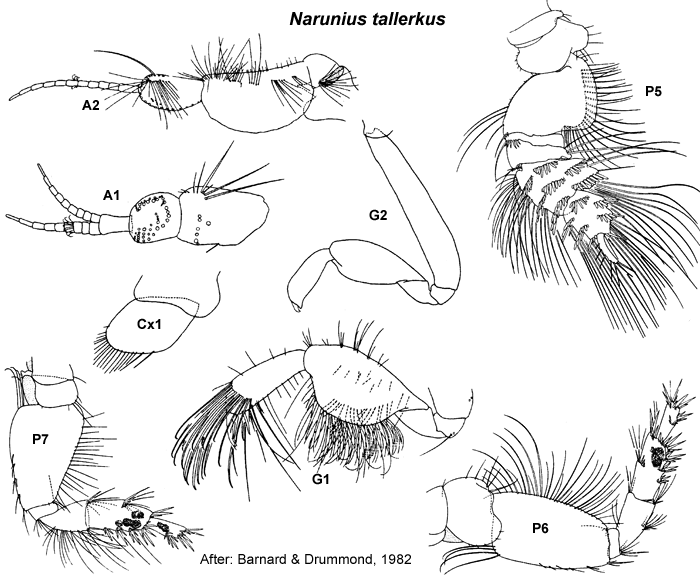

Narunius tallerkus Barnard & Drummond, 1982: 112, figs 40–43.
Type Material. Lodged in the AM.
Type Locality. Off Towra Point, New South Wales.
Description.Antenna 1 peduncular article 1 setal row with
only slender setae, proximal pair of setae simple; accessory flagellum
8–10 -articulate; primary flagellum 8–11 -articulate. Antenna 2 peduncular article 4 main setal row with only slender setae, proximal part of row evenly angled. Mandible incisors simple. Maxilla 1 palp with some setae displaced subapically.
Gnathopod 1 simple; coxa small, trapezoidal or anteroventrally curved, subequal in size to coxa 2. Gnathopod 2 minutely parachelate to chelate, propodus palm obtuse. Pereopod 3 coxa large, subequal in size to coxa 4. Pereopod 4 coxa large, posteroventral lobe absent. Pereopod 5 basis with mediofacial brush of setae; dactylus with robust setae arranged in a single row. Pereopod 6 basis moderately expanded, margins parallel; merus with few or no slender setae on posterior margin; dactylus vestigial. Pereopod 7
coxa without long posterior spine; basis moderately expanded, posterior
margins tapering distally, with slender setae along posteroproximal
margin; dactylus vestigial.
Epimeron 2 subequal in size to epimeron 3, posteroventral corner broadly rounded, more setose than epimeron 3. Epimeron 3 posteroventral corner narrowly rounded. Uropod 1 inner ramus shorter than outer ramus, not fused to peduncle. Uropod 2 inner ramus shorter than outer ramus, not fused to peduncle. Telson longer than broad, weakly cleft or emarginate.
Distribution.Australia: Western Port and Port Philip Bay, Victoria to Moreton Bay, Queensland.

___________________________
This
publication should be cited as: Kilgallen, N.M. & Lowry, J.K. 2008.
Urohaustoriidae (Amphipoda): World Genera and Species. Version 1. 1
January 2008. http://crustacea.net.